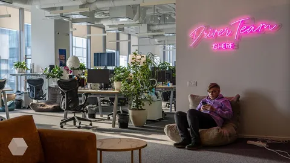

Во-первых, это красиво. Каждый раз, видя офисы "обычных" фирм, я думаю о том, насколько офигенные офисы у Яндекса. Я далек от дизайна, но могу отличить красивое от некрасивого.
Во-вторых, это эффективно. Когда ты можешь в коридоре за 5 минут обкашлять вопросик без встречи в календаре и зума - не прекрасно ли это?
В-третьих, это эргономично. Наши офисы продуманы до мелочей, в них есть все необходимое. Да что там необходимое - есть просто все, включая спортзал, душевые, кибер-арену с игровыми компами, плойки и вендоматы. Компания настолько заботится о своих сотрудниках, что даже поставила какаоварки, потому что народ просил О_о. Я даже не знал, что такое устройство бывает, пока не увидел.
В былые времена даже было такое выражение - "разговор у кулера". Означало неформальное спонтанное общение между коллегами в местах общего пользование в офисе. А знаете, почему у кулера? Да потому что других развлечений в офисе не было! А у нас что? Разговор за бильярдом, разговор в офисном баре, разговор за настольным теннисом, разговор на турниках? Не знаю, чем мы это все заслужили, но многие нынче воспринимают это как норму жизни, как само собой разумеющееся. А деды лишь умиляются и восхищенно охают.
И даже при всем этом находится какое-то количество недовольных. Кто-то возмущается неправильно порезанными яблоками на кофепойнтах. Кого-то не устраивает диаметр помидорок-чери. Ребят, вы нормальные? Вам, может, в шахте поработать на добыче месяцок-другой? А ничего, что всего этого у вас могло бы не быть, и стоит благодарить провидение и компанию за все те блага, которыми вы пользуетесь, морща носик? Зажрались! Разумеется, недовольство, как правило, исходит от зумеров, потому что они-то другой жизни и не нюхали. Не говорю, что все зумеры такие, но среди стариков я такого не наблюдал, хотя ворчать, по статусу, положено как раз нам.
